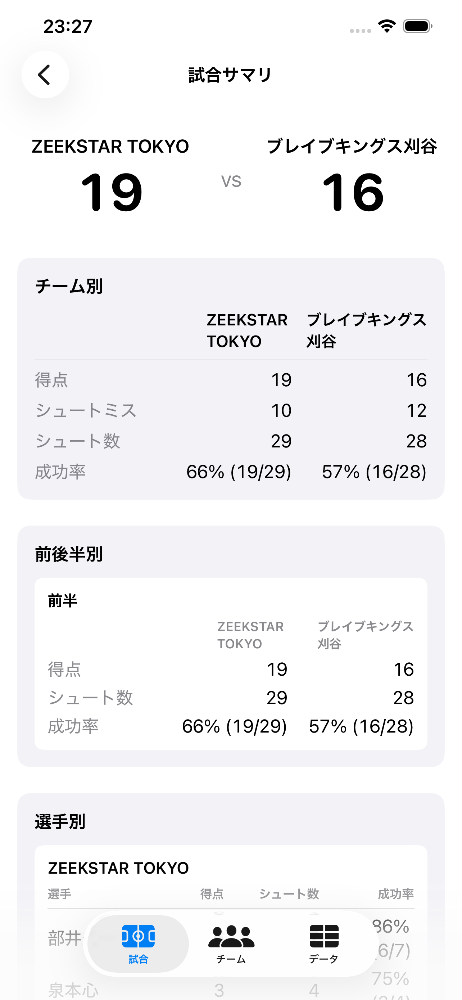
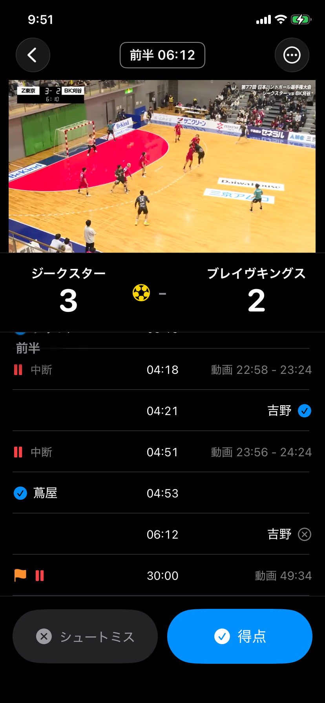
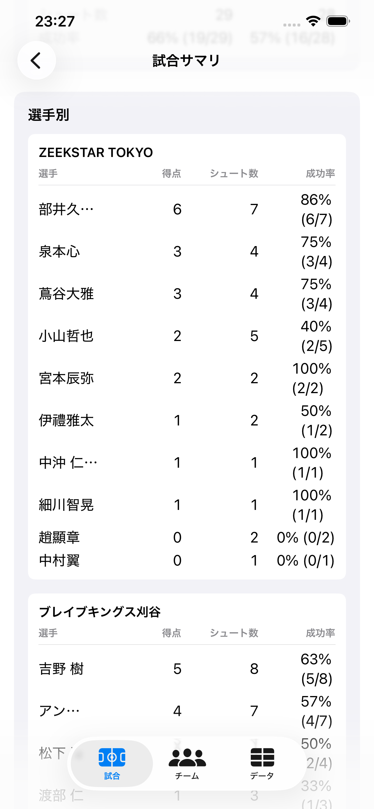

ハンド記録
ハンドボールの試合を、記録で振り返りやすく
試合中の記録から、チーム別・選手別のサマリ、得点差の流れ、ハイライト動画の連続再生まで。試合の見方が増える iOS アプリです。

1. 試合中の記録を、テンポよく
得点・シュートミス・選手・時間がボタン操作だけで紐づきます。試合を見ながらでもテンポを崩さずに残せて、後で見返せる記録になります。

2. チーム別・選手別のサマリで、試合の輪郭を掴む
誰がいつ何点取ったか、シュートが何本入って何本外れたか。チーム別・選手別・前後半別に切り替えながら、試合の輪郭を一目で見られます。

3. 得点差の流れで、流れが変わった瞬間を見つける
試合中のどこで点差が動いたかを、時系列のグラフで振り返れます。「あのタイムアウトの後で流れが変わった」が後から見える。

4. 見たい場面を、まとめて見る
YouTube 動画 URL を試合と紐づけておくと、得点シーンやシュートミスのタイミングを連続で再生できます。録画を見返す時間が大きく短くなります。
実在試合で、すぐ触れる
インストール直後からサンプル試合が入っています。記録と動画リンクをそのまま閲覧できます。

- 豊田合成ブルーファルコン vs ZEEKSTAR TOKYO（41 - 31）
- ZEEKSTAR TOKYO vs ブレイブキングス刈谷（19 - 16）
こんな人に
- 試合中にスマホで素早く記録したい
- 記録から動画の該当シーンをすぐ見返したい
- スタッツやシュートミスを残しておきたい